Trades VIP do Cobra. A cor da bolinha no nome do canal mostra o estado do trade. Hoje o canal btc-short sumiu da lista; nenhuma outra bolinha mudou.
21/10 22:43: "o XRP está indo bem, fiquem à vontade para realizar parcial" (ele trata como scalp, não swing). 22/10 04:41: "movendo o SL para a entrada" (gráfico 4h: entrada 1,3801, SL 1,4100 → entrada, alvo 1,1691). XRP ~1,325, ~4% a favor; mínima desde ontem 19h 1,3192 às 10h. Trade sem risco agora.
Encerrado em 21/10 (estopado às 11h43). O canal btc-short sumiu da lista hoje.
Sem post novo. Ordem em 11,31 de pé; LINK ~12,06, entrada ~6,2% abaixo; mínima desde ontem 19h 11,99.
Sem post novo. Níveis ≈ do gráfico. AAVE ~148,8, entrada ~12,7% abaixo; mínima desde ontem 19h 146,62. Contra o 1D (Baixa ✓). Alerta COBRA AAVE long ≈129,94 já existe.
Sem post novo. Scalp de 19/10 (entrada 189,46), sem stop/alvo postados. QNT ~193,4, ainda acima da entrada; foi de 211,85 (ontem 19h) a 192,0 (11h45 de hoje), devolvendo quase todo o lucro.
Canal 🟠btc-long, sem post novo desde 16/10. Entrada ≈79.128, SL 77.537, TP 93.604. BTC ~81,9k, entrada ~3,4% abaixo; mínima desde ontem 19h 81.376 às 10h45. O Cobra diz que o OI marcou topo local e o BTC voltou ao range, "modo chop, não corram para entrar". O 12h e o 1D seguem com Baixa ✓ (contra o long).
Sem post novo. ENTRY 99,77 / SL 95,67 / TP1 105,7. SOL ~104,8, entrada ~4,8% abaixo; mínima desde ontem 19h 103,55. O Adaśko vê o Schiff segurando em ≈103 ("se cair um pouco mais"). Contra o 1D (Baixa ✓). Alerta COBRA SOL long 2 99,77 já existe.
04:49: "quero aumentar o long de ETH no tridente de Schiff, fiquem de olho" (4h; rótulos 2.391,68 e 2.665,45, base 2.316,61, stop da adição ≈2.234,48). 10:37: "belo repique até agora". ETH fez mínima de 2.395 às 10h, praticamente na linha de 2.391,68, e está em ~2.414. O long original segue com stop na entrada 2.317 (TP1 2.415 já batido, TP2 2.852). Pelas regras do relatório, o long está contra o 12h e o 1D (Baixa ✓). Criado alerta para a adição em 2.391,68.
12:22: "o SOL me estopou e voou direto pra cima". Gráfico 1D: zona de long ≈99,7–101,5, stop ≈95,5, alvo ≈125–129. Sem nova entrada.
04:59: "KAS segurando até agora" (1D: caixa de long ≈0,0333–0,0511, linha 0,5 ≈0,0391). Restante segue com stop na entrada 0,0348; KAS ~0,0376 (Gate), mínima 24h 0,0373.
Encerrado 14/10 (saiu na mão). O alerta antigo COBRA BTC long 82.085 perdeu o sentido.
Ordem antiga (13/08), sem atualização.
Sem atualização desde 17/09. Continua 🟢.
Sem post novo hoje. Zonas de 21/10: compra ≈0,52–0,63, recarga ≈0,70–0,78, realização ≈0,88–0,99, macro ≈1,65–1,95. APT ~0,778, de volta à zona de recarga. Sem entrada/stop formais.
Sem mudança desde 05/09, ainda 🟠. Preço ~0,701.
Sem mudança desde 25/09, ainda 🟠. SOL ~104,8, entrada ~27% acima.
BTC perpétuo na Bybit. Valores com ≈ foram lidos das etiquetas do gráfico. Hoje ele realizou parte do short de ontem, postou 3 ideias de short e está long desde 11:02.
10:07 ideia de long no 4h com divergência de alta no 24m/12m/6m/3m (entrada ≈81,5k, stop ≈80,6k, alvo ≈83,98k). 10:08 abriu em 81.650,3; 10:53 fechou e disse que esperava mais baixo (caixa verde ≈80,75–81,1k; "se perder isso, pode cair muito mais"); 11:02 "voltei pro long". Stop/alvo ≈ da ideia das 10:07. Pelas regras do relatório, long contra o 12h e o 1D (Baixa ✓).
23:01 "acho que fiz o movimento certo". 23:07: a caixa ≈82.668–83.125 é bom lugar para TP1 e mover o stop. 07:56 realizou lucro no VAL (BTC ≈81,9k) com divergências de alta, e 07:57 "o resto vou segurar até 50k". BTC ~81,9k, ~2,9% a favor. A favor do 12h e do 1D (Baixa ✓).
Um dos "3 shorts que me interessam hoje": do VWAP, com divergência de baixa nos tempos menores. Níveis ≈ do gráfico. BTC ~81,9k, entrada ~0,5% acima, perto! A favor do 12h e do 1D. Alerta criado.
Reteste de baixa em 83k (golden pocket + 0,786 + VAH do range). Níveis ≈ do gráfico; risco/retorno ≈6 para 1. BTC ~81,9k, entrada ~1,6% acima. A favor do 12h e do 1D. Alerta criado.
"O short de ontem (que já peguei) ainda vale se voltarmos às máximas", com divergência de baixa no 1h/24m/12m. Níveis ≈ do gráfico; stop subiu de ≈85.096/85.592 para ≈85.830. Os alertas antigos JAYSON 84.323 e 84.565 já dispararam ontem; criado alerta novo em 84.300.
Ele entrou a mercado às 16:01 de 21/10 nessa região; o BTC caiu até 81.376 (alvo ≈79.641 ainda não). Substituído pelo Short 3 revalidado de hoje (stop ≈85.830).
Ele entrou a mercado às 16:01 de 21/10 nessa região; o BTC caiu até 81.376 (alvo ≈79.641 ainda não). Substituído pelo Short 3 revalidado de hoje (stop ≈85.830).
Sem post novo. Entrada ≈87.500, stop ≈90.034, alvo ≈69.262. BTC ~81,9k, entrada ~6,9% acima. A favor do 12h e do 1D. Alerta JAYSON 87.500 já existe.
Scalp com divergência de alta no 3m e 1m. Entrada ≈83.045 e stop ≈82.696 lidos do gráfico; alvo 84.225 escrito no post (o gráfico mostra ≈84.365). O BTC chegou a 84.225 às ~11h35, então o alvo foi batido. Sem alerta (já resolvido). Ele também postou um link de gráfico ao vivo às 10:32, sem níveis.
Antigo; a entrada ≈84.218 foi tocada em 21/10 e o BTC caiu depois, mas ele não entrou nesse nível. Substituído pelos shorts de 21–22/10.
O alvo ≈84.356 foi batido hoje às ~11h45 (máxima 84.798). A zona de entrada foi tocada em 19/10 sem bater o stop; não dá para saber se ele entrou (pedia divergência de alta no 12m/6m/3m).
Sem post novo. Entrada ≈79.656, stop ≈78.937, alvo ≈86.718. BTC ~81,9k, entrada ~2,7% abaixo. Contra o 12h e o 1D.
Sem post novo. Entrada ≈77.743, stop ≈75.185, alvo ≈86.821. BTC ~81,9k, entrada ~5% abaixo. Contra o 12h e o 1D.
Sem post novo; substituído pelo short swing de 21/10 (≈87.500). BTC ~81,9k.
Sem post sobre esse long (80.250,1, de 15/10). BTC ~81,9k, ~2% acima da entrada; mínima de hoje 81.376. Não dá para saber se segue aberto.
Zona onde ele entrou (80.250).
Front-runado; sem mudança.
Plano antigo; o BTC passou por 84.300 em 21/10 e caiu depois (mínima 81.376 hoje).
Histórico; encerrado em 12/10.
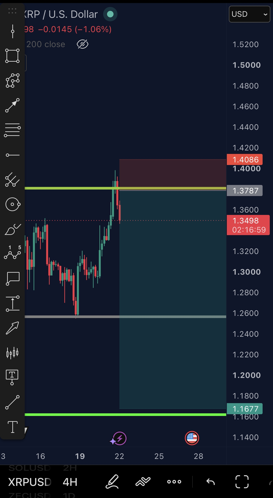
Cobra, 21/10 22:43: XRP short indo bem, liberou parciais (scalp).
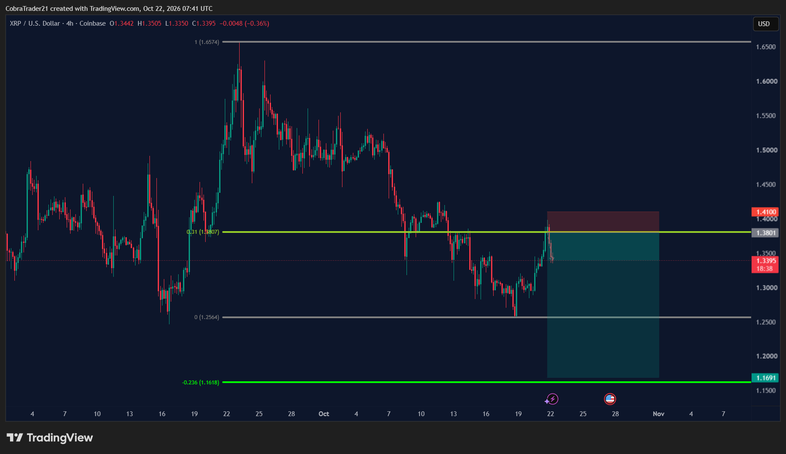
Cobra, 04:41: XRP short, stop movido para a entrada 1,3801; alvo 1,1691.
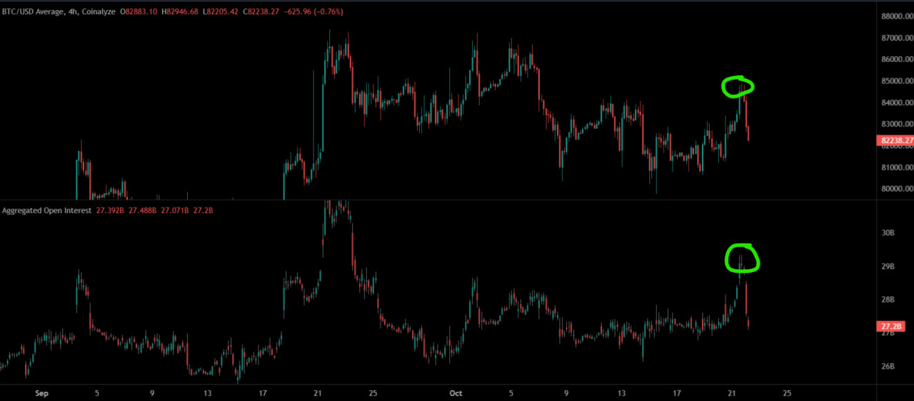
Cobra, 04:45: BTC 4h + open interest, OI marcou topo local e o BTC voltou ao range.
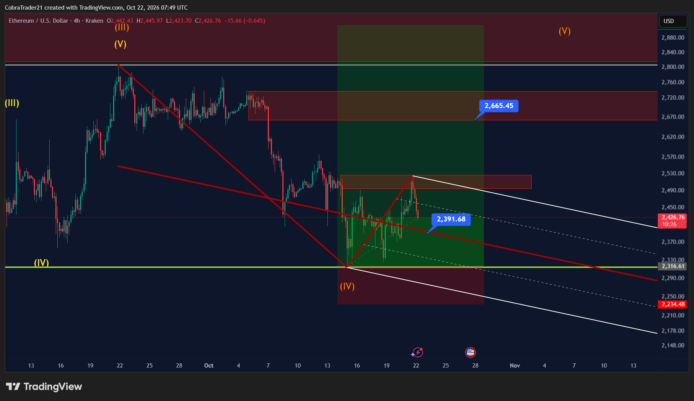
Cobra, 04:49: quer aumentar o long de ETH no tridente de Schiff (≈2.391,68).
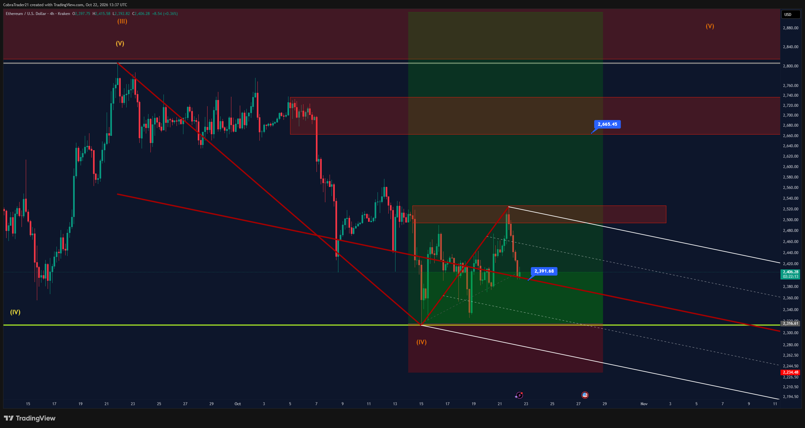
Cobra, 10:37: belo repique no ETH.
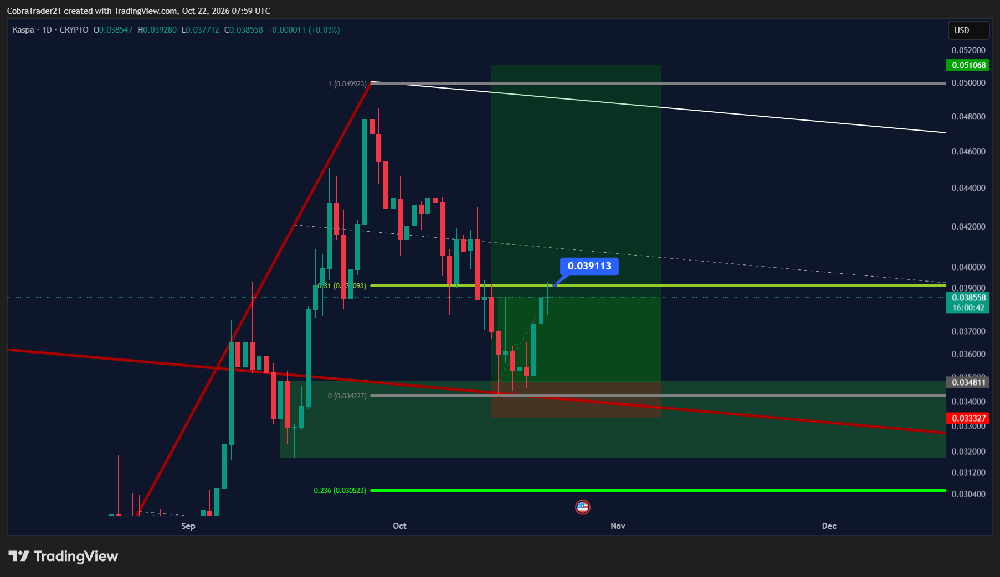
Cobra, 04:59: KAS segurando (1D).
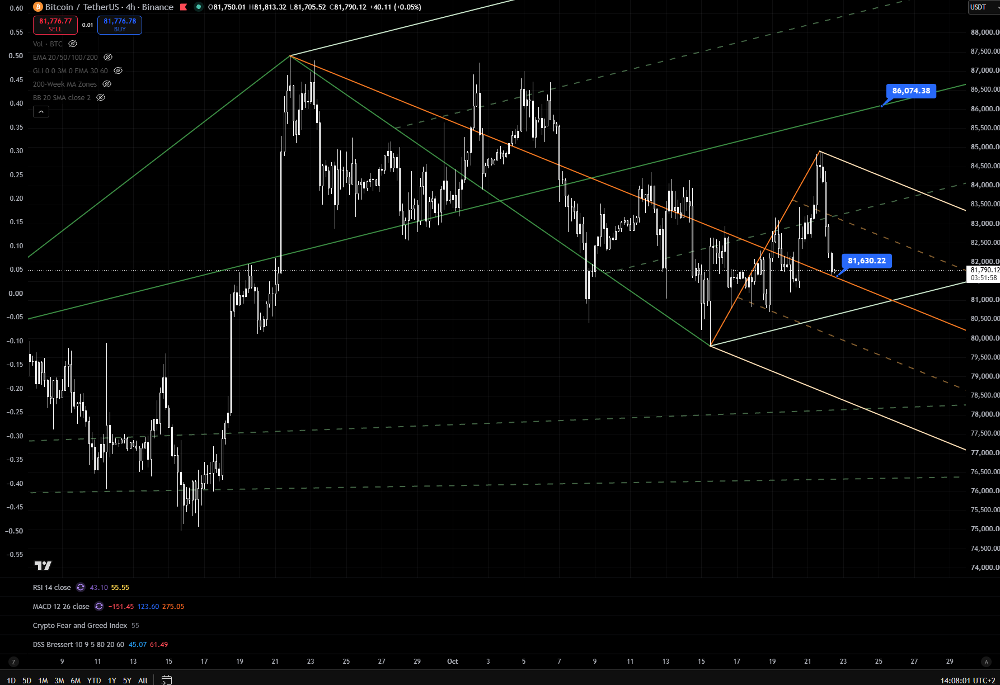
Adaśko, 09:08: BTC tocou suporte de curto prazo (≈81.630).
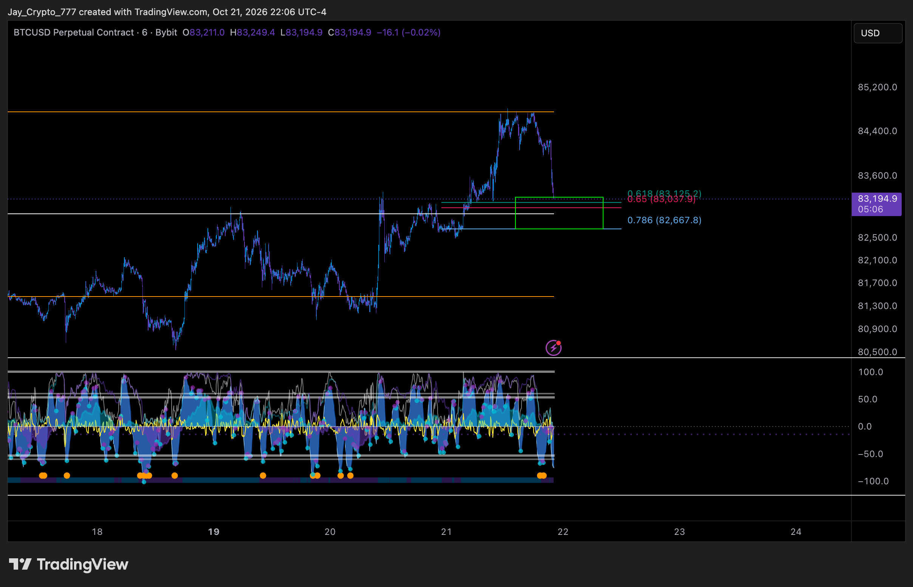
Jayson, 21/10 23:07: caixa ≈82.668–83.125 para o TP1 do short.
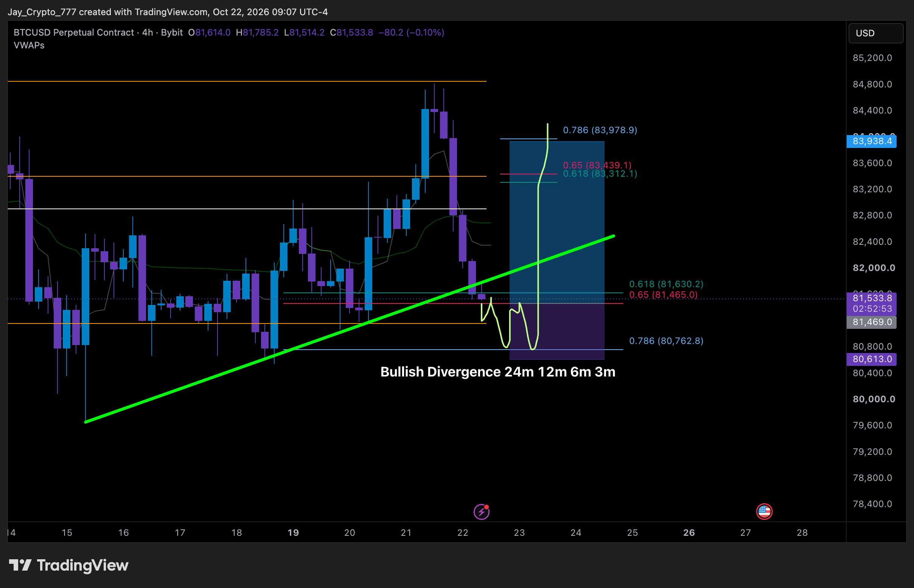
Jayson, 10:07: ideia de long (4h), entrada ≈81,5k, stop ≈80,6k, alvo ≈83,98k.
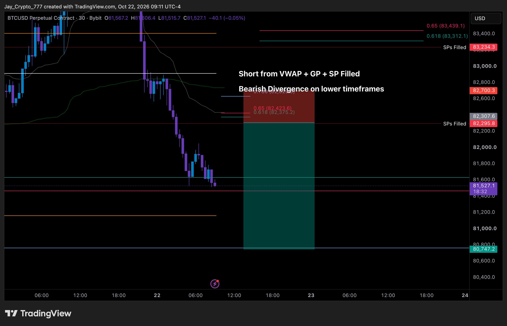
Jayson, 10:11: short 1 do VWAP, entrada ≈82.300, stop ≈82.700, alvo ≈80.747.
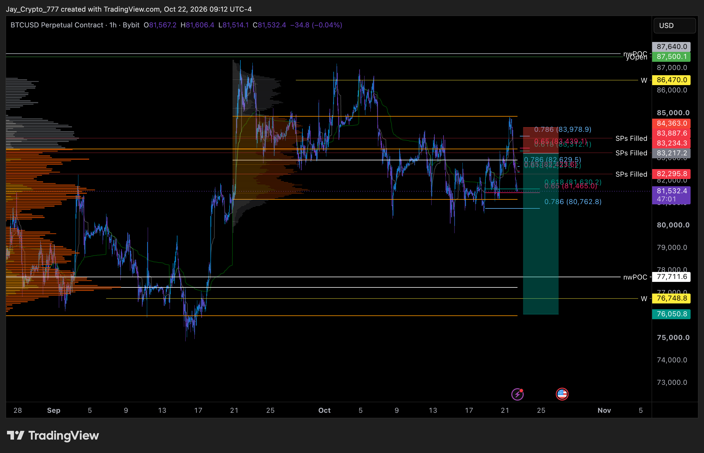
Jayson, 10:13: short 2 no reteste de 83k, entrada ≈83.200, stop ≈84.360, alvo ≈76.050.
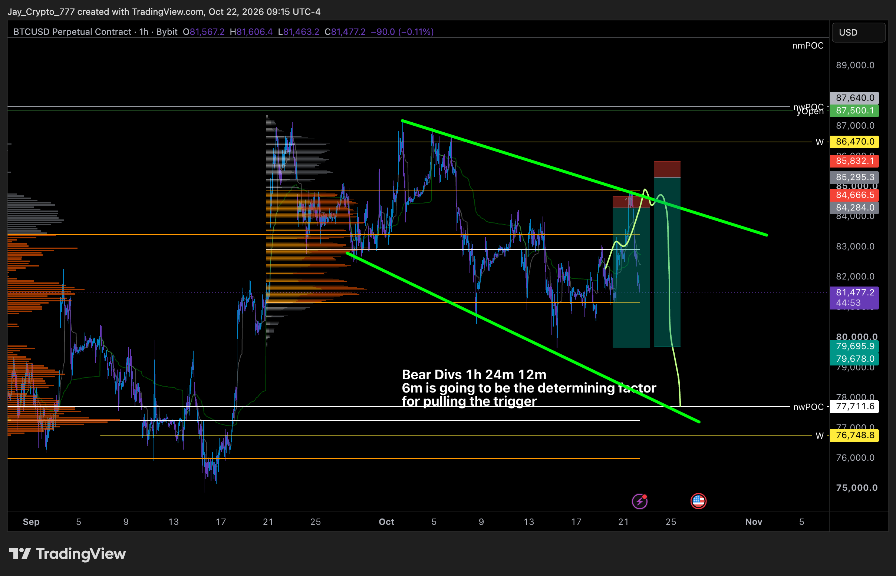
Jayson, 10:15: short de ontem revalidado, entrada ≈84.300–84.670, stop ≈85.830, alvo ≈79.700.
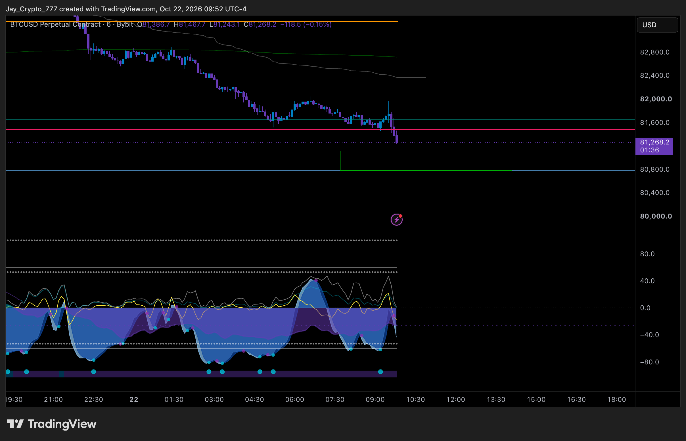
Jayson, 10:53: fechou o long; caixa verde ≈80,75–81,1k.